seaborn.swarmplot#
- seaborn.swarmplot(data=None, *, x=None, y=None, hue=None, order=None, hue_order=None, dodge=False, orient=None, color=None, palette=None, size=5, edgecolor='gray', linewidth=0, hue_norm=None, native_scale=False, formatter=None, legend='auto', warn_thresh=0.05, ax=None, **kwargs)#
Draw a categorical scatterplot with points adjusted to be non-overlapping.
This function is similar to
stripplot(), but the points are adjusted (only along the categorical axis) so that they don’t overlap. This gives a better representation of the distribution of values, but it does not scale well to large numbers of observations. This style of plot is sometimes called a “beeswarm”.A swarm plot can be drawn on its own, but it is also a good complement to a box or violin plot in cases where you want to show all observations along with some representation of the underlying distribution.
Note
By default, this function treats one of the variables as categorical and draws data at ordinal positions (0, 1, … n) on the relevant axis. This can be disabled with the
native_scaleparameter.See the tutorial for more information.
- Parameters:
- dataDataFrame, array, or list of arrays, optional
Dataset for plotting. If
xandyare absent, this is interpreted as wide-form. Otherwise it is expected to be long-form.- x, y, huenames of variables in
dataor vector data, optional Inputs for plotting long-form data. See examples for interpretation.
- order, hue_orderlists of strings, optional
Order to plot the categorical levels in; otherwise the levels are inferred from the data objects.
- dodgebool, optional
When using
huenesting, setting this toTruewill separate the strips for different hue levels along the categorical axis. Otherwise, the points for each level will be plotted in one swarm.- orient“v” | “h”, optional
Orientation of the plot (vertical or horizontal). This is usually inferred based on the type of the input variables, but it can be used to resolve ambiguity when both
xandyare numeric or when plotting wide-form data.- colormatplotlib color, optional
Single color for the elements in the plot.
- palettepalette name, list, or dict
Colors to use for the different levels of the
huevariable. Should be something that can be interpreted bycolor_palette(), or a dictionary mapping hue levels to matplotlib colors.- sizefloat, optional
Radius of the markers, in points.
- edgecolormatplotlib color, “gray” is special-cased, optional
Color of the lines around each point. If you pass
"gray", the brightness is determined by the color palette used for the body of the points.- linewidthfloat, optional
Width of the gray lines that frame the plot elements.
- native_scalebool, optional
When True, numeric or datetime values on the categorical axis will maintain their original scaling rather than being converted to fixed indices.
- formattercallable, optional
Function for converting categorical data into strings. Affects both grouping and tick labels.
- legend“auto”, “brief”, “full”, or False
How to draw the legend. If “brief”, numeric
hueandsizevariables will be represented with a sample of evenly spaced values. If “full”, every group will get an entry in the legend. If “auto”, choose between brief or full representation based on number of levels. IfFalse, no legend data is added and no legend is drawn.- axmatplotlib Axes, optional
Axes object to draw the plot onto, otherwise uses the current Axes.
- kwargskey, value mappings
Other keyword arguments are passed through to
matplotlib.axes.Axes.scatter().
- Returns:
- axmatplotlib Axes
Returns the Axes object with the plot drawn onto it.
See also
boxplotA traditional box-and-whisker plot with a similar API.
violinplotA combination of boxplot and kernel density estimation.
stripplotA scatterplot where one variable is categorical. Can be used in conjunction with other plots to show each observation.
catplotCombine a categorical plot with a
FacetGrid.
Examples
Assigning a single numeric variable shows its univariate distribution with points adjusted along on the other axis such that they don’t overlap:
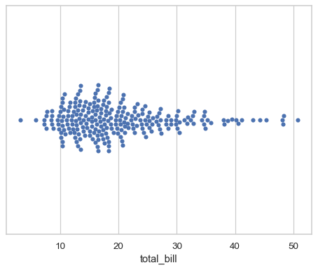tips = sns.load_dataset("tips") sns.swarmplot(data=tips, x="total_bill")
Assigning a second variable splits the groups of points to compare categorical levels of that variable:
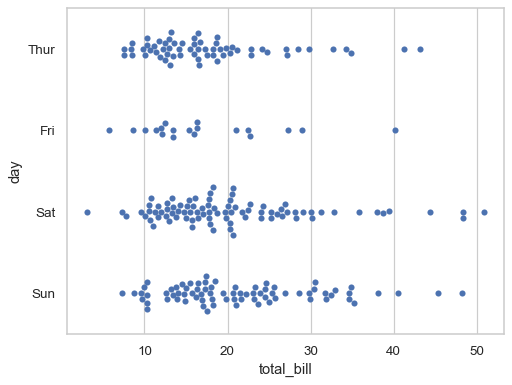sns.swarmplot(data=tips, x="total_bill", y="day")
Show vertically-oriented swarms by swapping the assignment of the categorical and numerical variables:
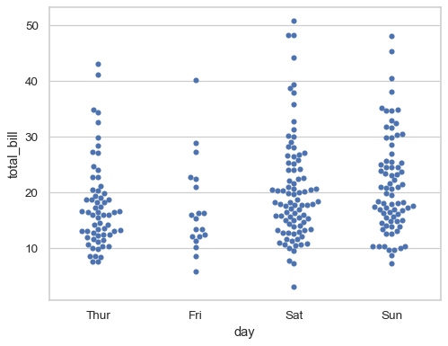sns.swarmplot(data=tips, x="day", y="total_bill")
Prior to version 0.12, the levels of the categorical variable had different colors by default. To get the same effect, assign the
huevariable explicitly: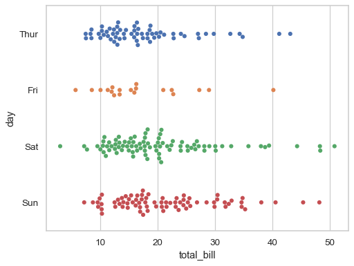sns.swarmplot(data=tips, x="total_bill", y="day", hue="day", legend=False)
Or you can assign a distinct variable to
hueto show a multidimensional relationship: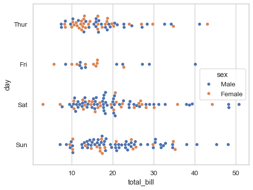sns.swarmplot(data=tips, x="total_bill", y="day", hue="sex")
If the
huevariable is numeric, it will be mapped with a quantitative palette by default (note that this was not the case prior to version 0.12):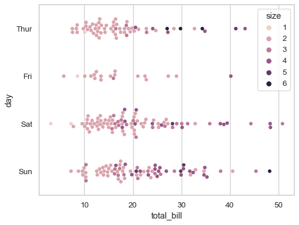sns.swarmplot(data=tips, x="total_bill", y="day", hue="size")
Use
paletteto control the color mapping, including forcing a categorical mapping by passing the name of a qualitative palette: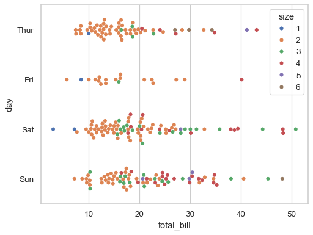sns.swarmplot(data=tips, x="total_bill", y="day", hue="size", palette="deep")
By default, the different levels of the
huevariable are intermingled in each swarm, but settingdodge=Truewill split them: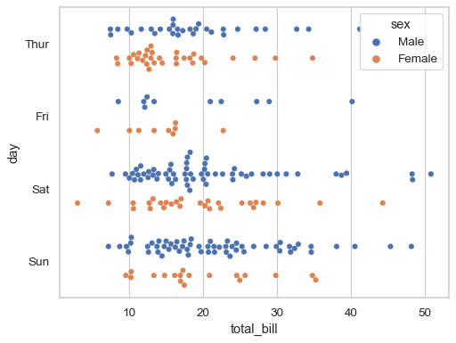sns.swarmplot(data=tips, x="total_bill", y="day", hue="sex", dodge=True)
The “orientation” of the plot (defined as the direction along which quantitative relationships are preserved) is usually inferred automatically. But in ambiguous cases, such as when both axis variables are numeric, it can be specified:
sns.swarmplot(data=tips, x="total_bill", y="size", orient="h")
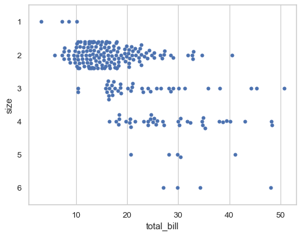/Users/mwaskom/code/seaborn/seaborn/categorical.py:3540: UserWarning: 15.4% of the points cannot be placed; you may want to decrease the size of the markers or use stripplot. warnings.warn(msg, UserWarning) /Users/mwaskom/code/seaborn/seaborn/categorical.py:3540: UserWarning: 17.3% of the points cannot be placed; you may want to decrease the size of the markers or use stripplot. warnings.warn(msg, UserWarning)
When the local density of points is too high, they will be forced to overlap in the “gutters” of each swarm and a warning will be issued. Decreasing the size of the points can help to avoid this problem:
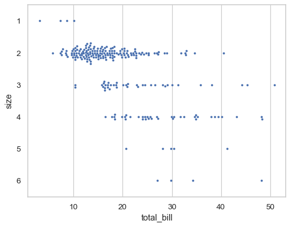sns.swarmplot(data=tips, x="total_bill", y="size", orient="h", size=3)
By default, the categorical variable will be mapped to discrete indices with a fixed scale (0, 1, …), even when it is numeric:
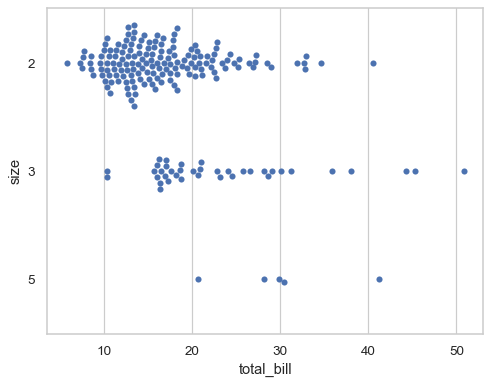sns.swarmplot( data=tips.query("size in [2, 3, 5]"), x="total_bill", y="size", orient="h", )
To disable this behavior and use the original scale of the variable, set
native_scale=True(notice how this also changes the order of the variables on the y axis):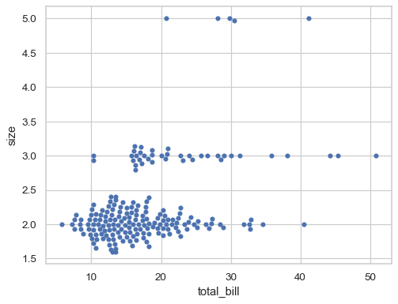sns.swarmplot( data=tips.query("size in [2, 3, 5]"), x="total_bill", y="size", orient="h", native_scale=True, )
Further visual customization can be achieved by passing keyword arguments for
matplotlib.axes.Axes.scatter():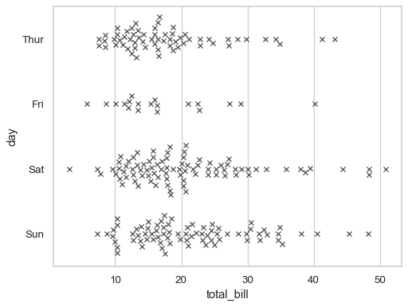sns.swarmplot( data=tips, x="total_bill", y="day", marker="x", linewidth=1, )
To make a plot with multiple facets, it is safer to use
catplot()withkind="swarm"than to work withFacetGriddirectly, becausecatplot()will ensure that the categorical and hue variables are properly synchronized in each facet: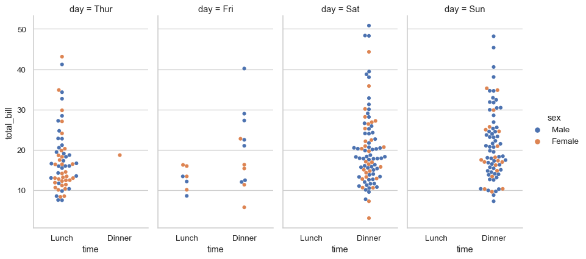sns.catplot( data=tips, kind="swarm", x="time", y="total_bill", hue="sex", col="day", aspect=.5 )